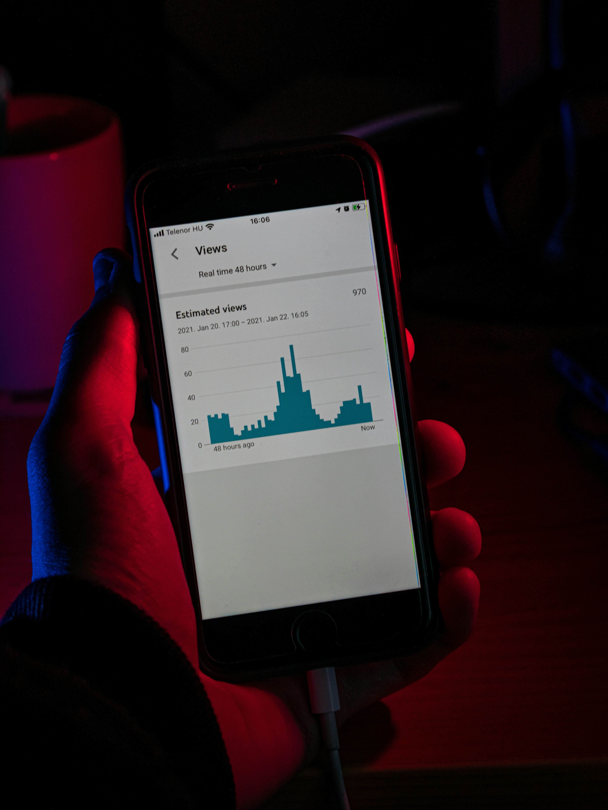
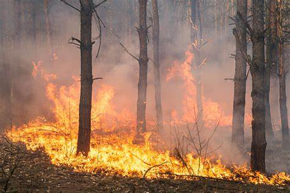

Prova de Computação Estatística: Soluções e Análises - R
Resolução detalhada de uma prova de Computação Estatística, abrangendo uma ampla gama de conceitos essenciais
relacionados à manipulação de dados, visualização gráfica e análise estatística, utilizando a linguagem de programação
R. As questões exploram desde operações fundamentais de tratamento e transformação de datasets, até a criação de
gráficos informativos e análise visual, além de cálculos estatísticos relevantes para a interpretação de dados. Assim, a
prova oferece uma abordagem prática e detalhada de como utilizar o R para resolver problemas reais de estatística
aplicada, unindo teoria e prática de maneira integrada.

üî• Análise Explorat√≥ria básica de Inc√™ndios Florestais no Brasil (1998‚Äì2017)
Este projeto tem como objetivo analisar a frequência e a distribuição dos incêndios florestais no Brasil entre os anos
de 1998 e 2017. Através de visualizações e estatísticas descritivas, foram exploradas tendências anuais, padrões mensais
e os estados com maior incidência de queimadas. A análise foi feita em R, utilizando principalmente os pacotes tidyverse
e ggplot2. Principais descobertas:
2003 foi o ano com o maior número de incêndios.
Os meses de julho, agosto, outubro e novembro concentram mais queimadas.
O estado do Mato Grosso lidera disparado em número de focos, de forma consistente ao longo dos anos.

Análise Exploratória de Dados para a área de Varejo
Neste projeto, mergulharemos na análise exploratória dos dados de vendas de uma grande rede de varejo que opera em
diversas cidades dos Estados Unidos. Nosso objetivo é responder a 10 perguntas de negócio cruciais, descobrindo padrões
de vendas em diferentes regiões, categorias de produtos e segmentos de mercado. Além disso, exploraremos o impacto de
diferentes políticas de desconto nas receitas da empresa. Com insights valiosos, pretendemos apoiar decisões
estratégicas que não só otimizarão as operações de vendas, mas também oferecerão uma visão detalhada e multifacetada do
desempenho comercial, ajudando a empresa a crescer e prosperar em um mercado competitivo.

Disciplina de Computação Estatística 1 - Lista 2
Análise detalhada dos dados de saúde do conjunto "heart.csv" por meio de diversas técnicas estatísticas e
de visualização. Inicialmente, carregamos e inspecionamos os dados, em seguida, categorizamos a variável sexo.
Exploramos a relação entre idade e colesterol através de gráficos de dispersão coloridos por sexo e aprimorados com
títulos e rótulos claros. Calculamos a média e o desvio padrão do colesterol, comparando com nossas observações visuais,
e desenvolvemos boxplots ordenados por mediana para aprofundar a análise. Filtramos indivíduos menores de 50 anos para
ver mudanças significativas e analisamos a distribuição da variável "cp" por sexo, ajustando para frequências relativas.
Histogramas da taxa máxima de batimentos cardíacos (thalach) foram criados separadamente por sexo, incluindo gráficos de
densidade para uma interpretação mais detalhada. Estes exercícios oferecem insights valiosos e interessantes sobre os padrões de saúde,
incentivando uma análise crítica e informada dos dados. Descubra mais clicando e explorando cada etapa detalhada!

Análise Exploratória de Dados: Desempenho Acadêmico de Estudantes: Parte 6
Você já se perguntou como diferentes fatores influenciam o desempenho acadêmico dos estudantes? Neste projeto,
realizamos uma Análise Exploratória de Dados (EDA) detalhada utilizando um conjunto de dados que abrange
diversas
características dos alunos, como gênero, etnia, nível de escolaridade dos pais, tipo de almoço recebido e
participação
em cursos preparatórios. Além disso, analisamos as notas dos alunos em matemática, leitura e escrita. Exploramos
como o
desempenho varia entre meninos e meninas, se o nível educacional dos pais influencia as notas e se alunos que
recebem
almoço gratuito têm um desempenho diferente. Também investigamos se a participação em cursos preparatórios
resulta em
melhores resultados acadêmicos e como as notas variam entre diferentes grupos étnicos. Clique para explorar e
descobrir
insights surpreendentes que podem transformar estratégias educacionais!

Análise Exploratória de Dados: Desempenho Acadêmico de Estudantes: Parte 5
Você já se perguntou como diferentes fatores influenciam o desempenho acadêmico dos estudantes? Neste projeto,
realizamos uma Análise Exploratória de Dados (EDA) detalhada utilizando um conjunto de dados que abrange
diversas
características dos alunos, como gênero, etnia, nível de escolaridade dos pais, tipo de almoço recebido e
participação
em cursos preparatórios. Além disso, analisamos as notas dos alunos em matemática, leitura e escrita. Exploramos
como o
desempenho varia entre meninos e meninas, se o nível educacional dos pais influencia as notas e se alunos que
recebem
almoço gratuito têm um desempenho diferente. Também investigamos se a participação em cursos preparatórios
resulta em
melhores resultados acadêmicos e como as notas variam entre diferentes grupos étnicos. Clique para explorar e
descobrir
insights surpreendentes que podem transformar estratégias educacionais!
Análise Exploratória de Dados: Desempenho Acadêmico de Estudantes: Parte 4
Você já se perguntou como diferentes fatores influenciam o desempenho acadêmico dos estudantes? Neste projeto,
realizamos uma Análise Exploratória de Dados (EDA) detalhada utilizando um conjunto de dados que abrange
diversas
características dos alunos, como gênero, etnia, nível de escolaridade dos pais, tipo de almoço recebido e
participação
em cursos preparatórios. Além disso, analisamos as notas dos alunos em matemática, leitura e escrita. Exploramos
como o
desempenho varia entre meninos e meninas, se o nível educacional dos pais influencia as notas e se alunos que
recebem
almoço gratuito têm um desempenho diferente. Também investigamos se a participação em cursos preparatórios
resulta em
melhores resultados acadêmicos e como as notas variam entre diferentes grupos étnicos. Clique para explorar e
descobrir
insights surpreendentes que podem transformar estratégias educacionais!
Análise Exploratória de Dados: Desempenho Acadêmico de Estudantes: Parte 3
Você já se perguntou como diferentes fatores influenciam o desempenho acadêmico dos estudantes? Neste projeto,
realizamos uma Análise Exploratória de Dados (EDA) detalhada utilizando um conjunto de dados que abrange
diversas
características dos alunos, como gênero, etnia, nível de escolaridade dos pais, tipo de almoço recebido e
participação
em cursos preparatórios. Além disso, analisamos as notas dos alunos em matemática, leitura e escrita. Exploramos
como o
desempenho varia entre meninos e meninas, se o nível educacional dos pais influencia as notas e se alunos que
recebem
almoço gratuito têm um desempenho diferente. Também investigamos se a participação em cursos preparatórios
resulta em
melhores resultados acadêmicos e como as notas variam entre diferentes grupos étnicos. Clique para explorar e
descobrir
insights surpreendentes que podem transformar estratégias educacionais!
Análise Exploratória de Dados: Desempenho Acadêmico de Estudantes: Parte 2
Você já se perguntou como diferentes fatores influenciam o desempenho acadêmico dos estudantes? Neste projeto,
realizamos uma Análise Exploratória de Dados (EDA) detalhada utilizando um conjunto de dados que abrange
diversas
características dos alunos, como gênero, etnia, nível de escolaridade dos pais, tipo de almoço recebido e
participação
em cursos preparatórios. Além disso, analisamos as notas dos alunos em matemática, leitura e escrita. Exploramos
como o
desempenho varia entre meninos e meninas, se o nível educacional dos pais influencia as notas e se alunos que
recebem
almoço gratuito têm um desempenho diferente. Também investigamos se a participação em cursos preparatórios
resulta em
melhores resultados acadêmicos e como as notas variam entre diferentes grupos étnicos. Clique para explorar e
descobrir
insights surpreendentes que podem transformar estratégias educacionais!
Análise Exploratória de Dados: Desempenho Acadêmico de Estudantes: Parte 1
Você já se perguntou como diferentes fatores influenciam o desempenho acadêmico dos estudantes? Neste projeto,
realizamos uma Análise Exploratória de Dados (EDA) detalhada utilizando um conjunto de dados que abrange diversas
características dos alunos, como gênero, etnia, nível de escolaridade dos pais, tipo de almoço recebido e participação
em cursos preparatórios. Além disso, analisamos as notas dos alunos em matemática, leitura e escrita. Exploramos como o
desempenho varia entre meninos e meninas, se o nível educacional dos pais influencia as notas e se alunos que recebem
almoço gratuito têm um desempenho diferente. Também investigamos se a participação em cursos preparatórios resulta em
melhores resultados acadêmicos e como as notas variam entre diferentes grupos étnicos. Clique para explorar e descobrir
insights surpreendentes que podem transformar estratégias educacionais!

Análise de Dados Econômicos do Brasil
Mergulhe nas dinâmicas econ√¥micas do Brasil como nunca antes! üöÄ Descubra o nosso estudo exclusivo que revela as
oscilações do PIB per capita através das diversas territorialidades do Brasil, abrangendo um período crítico e
revelador. De surpresas econômicas a padrões de crescimento e desafios, nosso projeto desvenda os segredos por trás dos
números, iluminando as regiões que lideraram e aquelas que enfrentaram adversidades. Seja você um entusiasta de dados,
um profissional da área ou simplesmente curioso sobre as forças econômicas que moldam o nosso país, este projeto é sua
janela para compreender a verdadeira tessitura da economia brasileira. Não perca a chance de explorar essa jornada de
descobertas — clique no link e veja o Brasil sob uma nova perspectiva!

Desempenho de estudantes em Matemática, leitura e redação
Em nossa jornada para compreender os fatores que moldam o desempenho acadêmico, nos deparamos com duas forças poderosas:
a influência educacional dos pais e as variações de desempenho entre gêneros. Nossa análise detalhada revela uma
correlação inegável entre o nível de educação dos pais e as notas alcançadas por seus filhos, sugerindo que o legado
educacional transcende gerações, pavimentando caminhos para o sucesso acadêmico. Paralelamente, ao explorar as
diferenças de desempenho baseadas em gênero, descobrimos padrões distintos que ressaltam a necessidade de abordagens
pedagógicas sensíveis ao gênero, capazes de equilibrar e potencializar o aprendizado de todos os estudantes. Esses
insights não apenas iluminam os pilares sobre os quais o sucesso acadêmico é construído, mas também apontam para a
importância de criar ambientes educacionais que valorizem e nutram tanto a diversidade quanto a herança educacional.

Análise de Testes de Alcoolemia em Ames: Padrões, Implicações e Insights
Descubra os insights escondidos nos testes de alcoolemia de Ames: uma cidade transformada pelo espírito universitário e
eventos icônicos. Nosso projeto ilumina como festas e políticas se cruzam, afetando as decisões dos jovens ao volante.
Desperte sua curiosidade e clique para entender as lições aprendidas e as estratégias que estão redefinindo a segurança
pública.

Aplicação de Estatística Exploratória por um dos universos mais criativos existentes. Análise de dados sobre o fantástico mundo dos
animes
Explore o fascinante universo dos animes neste projeto de análise de dados, onde mergulhamos em gêneros, avaliações,
popularidade e outros aspectos que moldam sua recepção. Descubra como qualidade e popularidade estão interligadas e
acompanhe a evolução das preferências e tendências da indústria ao longo das gerações. Apesar de algumas limitações,
nossa investigação revela a complexidade e a riqueza cultural dos animes, oferecendo insights valiosos para futuras
pesquisas e para fãs do gênero globalmente.

Explorando Tendências Tecnológicas: Uma Análise de Dados das Perguntas no Stack Overflow!
Descubra neste projeto de análise exploratória as linguagens de programação que dominam as discussões no Stack Overflow,
revelando tendências e preferências na comunidade tecnológica. Investigamos o crescimento das comunidades de usuários
por trás de linguagens como Python, SQL, e R, destacando a importância de uma base ativa para o aprendizado e o impacto
no mercado de trabalho. Nossos resultados evidenciam Python como a escolha líder para análise de dados, com sua
comunidade robusta oferecendo amplos recursos para desenvolvimento. Além disso, analisamos a popularidade de tags
específicas e o uso diversificado de tecnologias em programação, apontando para oportunidades emergentes em análise de
dados e desenvolvimento web. Este estudo sublinha como a escolha de linguagens com comunidades fortes não só enriquece o
desenvolvimento profissional, mas também abre caminhos para o sucesso na carreira tecnológica.

Dr. Semmelweis e a importância de lavar as mãos
Descubra a revolucionária contribuição do Dr. Ignaz Semmelweis para a medicina no Hospital Geral de Viena, onde sua
prática inovadora de lavagem das mãos no século XIX reduziu drasticamente as taxas de mortalidade por febre infantil.
Antes da descoberta das bactérias, suas ideias enfrentaram resistência, mas hoje, ele é celebrado como o pai da higiene
das mãos na medicina. Este projeto explora a vida e o legado de Semmelweis, cujo trabalho pioneiro salva vidas até hoje.
Resolvendo Problemas com Lógica de Programação em Python
Explore como o domínio da lógica de programação em Python pode transformar a resolução de problemas práticos, desde o
desenvolvimento de um app de vendas até a gestão eficiente de uma copiadora e de uma pequena empresa. Este projeto
revela como a aplicação estruturada de algoritmos e funções pode automatizar tarefas e aumentar a eficiência
operacional.
Através de exercícios desafiadores, aprenda a manipular listas e dicionários, implementar loops e condições, e
modularizar o código para criar soluções robustas e confiáveis. Este trabalho destaca a importância da validação de
entradas do usuário e do tratamento de exceções, práticas cruciais para a construção de programas sólidos.
Descubra como essas habilidades são aplicadas em cenários reais, desde a interface de usuário de um app de vendas,
passando pela automatização de serviços de uma copiadora, até o desenvolvimento de um sistema de gerenciamento de
livros. Este projeto não só reforça o raciocínio lógico, mas também prepara o caminho para enfrentar desafios mais
complexos no mundo da programação.